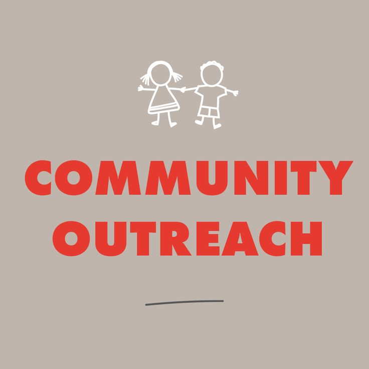

Our Focus Areas

Community Outreach
Partnering with local leaders to ensure every community has access to safe and clean water.

Water Education
Teaching sustainable water usage and sanitation practices to schools and families.

Innovation & Technology
Using smart mapping and data tracking to monitor water sources and quality.

Volunteer & Fundraising
Join our mission — volunteer, donate, and help spread awareness for clean water access.